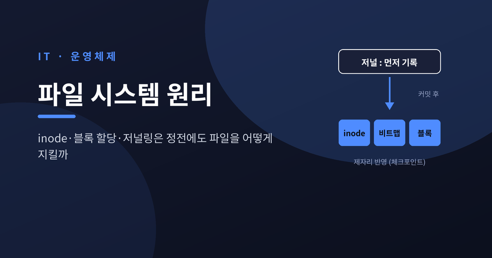
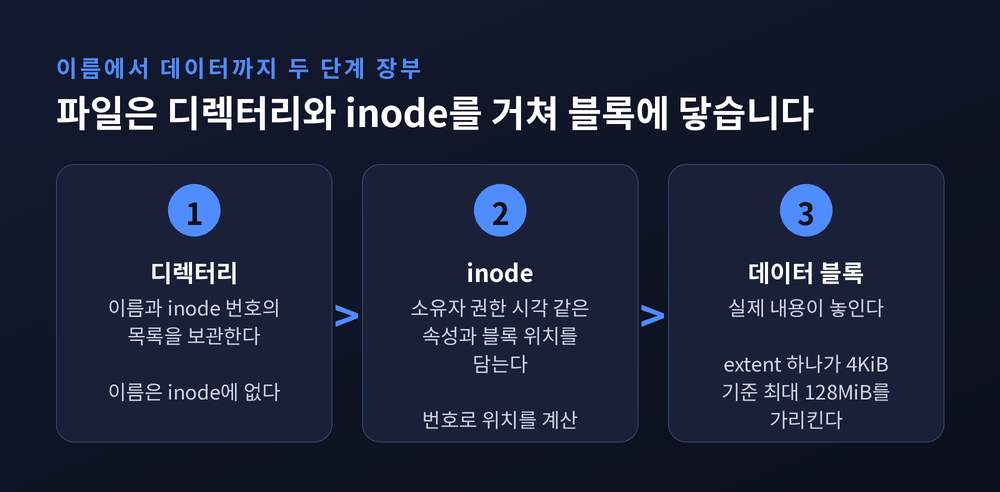
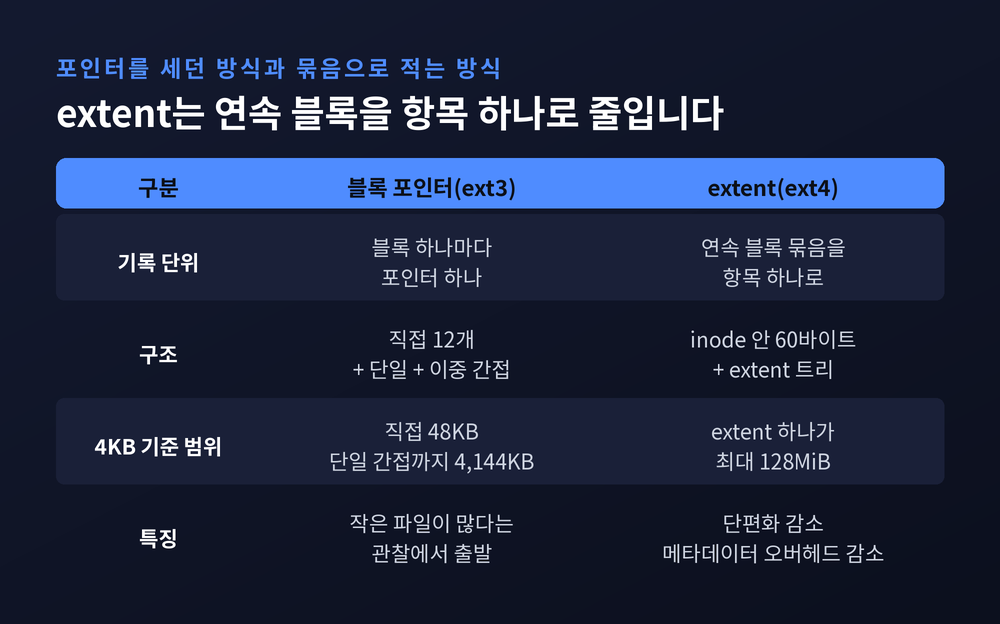
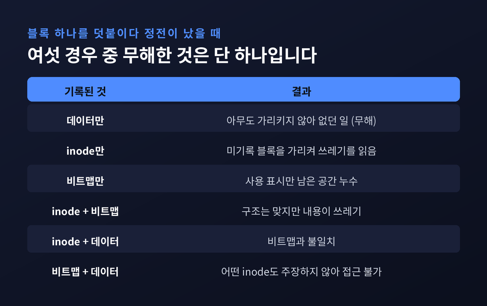
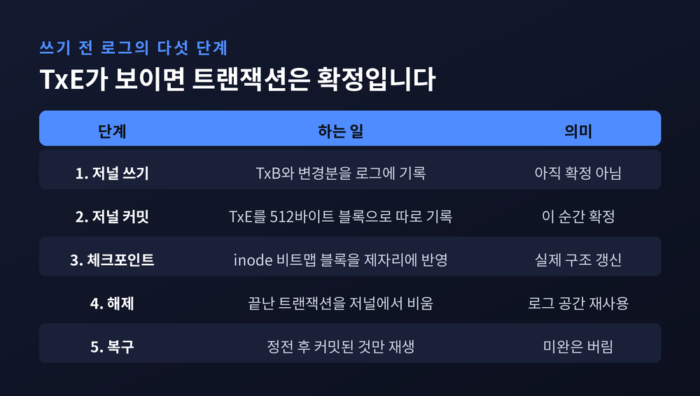
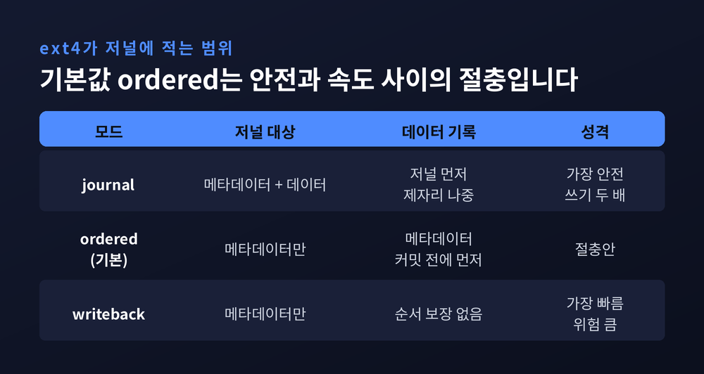
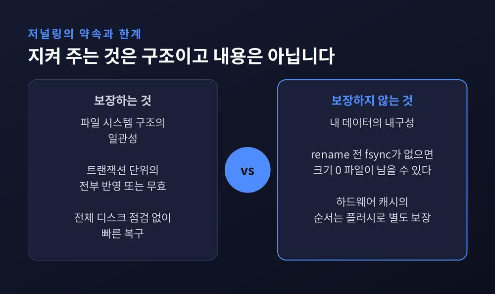

파일 시스템 원리, inode·블록 할당·저널링이 정전에도 파일을 지키는 법

오늘은 파일 시스템이 파일 하나를 저장하는 방식을 따라가 보려 합니다. inode가 무엇을 담는지, 블록은 어떻게 할당되는지, 그리고 저장 도중 전원이 나가도 구조가 무너지지 않는 이유를 저널링 중심으로 정리합니다. 기준은 리눅스의 ext4입니다.
세 줄 요약
- 파일 이름과 파일 내용 사이에는 디렉터리 → inode → 데이터 블록이라는 두 단계 장부가 있습니다.
- 파일 하나를 늘리는 일에도 inode·비트맵·데이터 블록, 세 곳을 고쳐야 합니다. 그 사이에 정전이 나면 어긋난 상태가 남습니다.
- 저널링은 먼저 로그에 적고, 커밋한 뒤에 제자리에 반영해서 이 틈을 메웁니다. 다만 저널링이 지키는 것은 구조이지, 내 데이터의 내구성은 아닙니다.
파일의 정체는 이름이 아니라 inode 번호입니다
우리는 파일을 이름으로 부르지만, 파일 시스템 안에서 파일의 정체는 이름이 아닙니다. 번호입니다.
inode는 소유자, 권한, 타임스탬프 같은 속성과 데이터 블록의 위치를 담은 구조체입니다. 여기에 파일 이름은 들어 있지 않습니다. 이름은 디렉터리가 따로 갖고 있습니다. 디렉터리는 본질적으로 "이름과 inode 번호의 목록"입니다.
이 분리 덕분에 하드 링크가 가능해집니다. 서로 다른 이름 여러 개가 같은 inode를 가리킬 수 있고, 먼저 만든 이름이라고 해서 특별 대우를 받지 않습니다. 심볼릭 링크가 inode가 아니라 원래 경로명에 기대는 것과는 다른 점입니다.
inode의 위치는 계산으로 바로 나옵니다. 교과서 OSTEP의 예시를 빌리면, 256바이트 inode가 12KB 지점부터 이어지는 테이블에서 32번 inode는 32×256=8,192바이트를 더한 20KB, 즉 512바이트 섹터 기준 40번 섹터에 있습니다. ext4에서는 블록 그룹을 (inode 번호 − 1) / 그룹당 inode 수로 구합니다. 기본 inode 크기는 256바이트이고, 0번 inode는 존재하지 않으며 2번이 루트 디렉터리입니다.
한 가지 한계도 있습니다. inode는 미리 정해진 수만큼 만들어 두는 구조라서, 빈 공간이 남아 있어도 inode가 먼저 바닥나는 일이 생깁니다. 작은 파일이 무수히 쌓이는 메일 서버 같은 곳에서 흔한 사고입니다.

블록 할당 — 포인터를 세던 시대에서 extent로
데이터가 놓인 위치는 inode 안에 적힙니다. ext4의 inode에는 60바이트짜리 블록 정보 영역이 있고, 여기에 블록 맵 또는 extent 트리가 들어갑니다.
예전엔 블록 포인터를 하나하나 적었습니다. OSTEP이 설명하는 전통적 구조는 직접 포인터 12개, 단일 간접 블록, 이중 간접 블록으로 이뤄진 비대칭 트리입니다. 4KB 블록이라면 직접 포인터만으로 48KB, 단일 간접 블록은 포인터 1,024개를 품어 (12+1024)×4KB, 약 4,144KB까지 닿습니다. 이중 간접까지 더하면 4GB를 넘습니다. 파일 대부분이 작다는 관찰, 즉 가장 흔한 크기가 2KB 안팎이라는 관찰에서 나온 설계입니다.
지금은 extent를 씁니다. 연속된 물리 블록 묶음을 "여기서부터 몇 블록"이라는 한 항목으로 적는 방식입니다. 4KiB 블록 기준으로 extent 하나가 최대 128MiB의 연속 공간을 가리킵니다. 큰 파일을 포인터 수만 개로 적던 일이 항목 몇 개로 줄어들고, 커널 문서도 이 방식이 메타데이터 오버헤드를 줄인다고 설명합니다.

연속 배치를 돕는 장치가 둘 더 있습니다. 하나는 지연 할당입니다. 블록 할당을 실제로 디스크에 쓰기 직전까지 미뤄서 여러 블록을 모아 한 번에 배치합니다. 다른 하나는 블록 그룹입니다. ext4는 기본 4KiB 블록으로 32,768블록, 곧 128MiB를 한 그룹으로 묶고 그 안에 비트맵, inode 테이블, 데이터 블록을 함께 둡니다.
이 발상은 하루아침에 나온 것이 아닙니다. 옛 UNIX 파일 시스템은 디스크 대역폭의 겨우 2%밖에 쓰지 못했다고 합니다. 데이터가 흩어지고 inode와 데이터가 멀리 떨어져 있었기 때문입니다. 이를 고친 FFS가 "관련된 것은 가까이, 무관한 것은 멀리"라는 원칙으로 실린더 그룹을 도입했고, 지금의 블록 그룹이 그 후손입니다.
파일 하나를 늘리는 데 세 곳을 고칩니다
이제 본론입니다. 파일 끝에 블록 하나를 덧붙이는 단순한 작업을 생각해 보겠습니다.
고칠 곳이 세 군데입니다. 새 블록 주소를 적을 inode, 그 블록이 사용 중임을 표시할 비트맵, 그리고 데이터 블록 자체입니다. 디스크는 이 셋을 한 번에 쓰지 못합니다. 순서대로 쓰다가 중간에 전원이 나가면 어떻게 될까요. OSTEP은 여섯 가지 경우로 나눠 설명합니다.

- 데이터만 기록됐다면 아무도 가리키지 않으니 쓰기가 없던 일이 됩니다. 이것이 유일하게 무해한 경우입니다.
- inode만 기록됐다면 inode가 아직 쓰이지 않은 블록을 가리킵니다. 읽으면 쓰레기가 나옵니다.
- 비트맵만 기록됐다면 사용 중이라 표시된 블록을 아무도 쓰지 않는 공간 누수가 됩니다.
- inode와 비트맵만 기록됐다면 구조는 맞지만 내용이 쓰레기입니다.
나머지 두 경우도 비트맵 불일치나 접근 불가 블록으로 이어집니다. 여섯 중 다섯이 문제입니다.
초기의 해법은 fsck였습니다. 부팅할 때 슈퍼블록, 빈 블록, inode, 링크 수, 디렉터리를 단계별로 전수 점검합니다. 문제는 비용입니다. OSTEP의 비유를 빌리면, 침실에서 열쇠를 떨어뜨렸는데 집 전체를 뒤지는 격입니다. 고친 곳은 블록 세 개인데 복구 시간은 디스크 크기에 비례합니다. 디스크가 커질수록 정전 한 번의 뒷수습도 그만큼 길어집니다.
저널링 — 먼저 적고, 그다음에 반영합니다
그래서 나온 발상이 저널링입니다. 제자리를 고치기 전에, 무엇을 고칠지 로그에 먼저 적습니다. 정전이 나면 전체 디스크를 뒤질 필요 없이 로그의 마지막 부분만 확인하면 됩니다.
OSTEP이 설명하는 데이터 저널링은 다섯 단계입니다.
- 저널 쓰기 — 트랜잭션 시작 표지(TxB)와 변경할 메타데이터, 데이터를 로그에 기록합니다.
- 저널 커밋 — 트랜잭션 종료 표지(TxE)를 512바이트 블록 하나로 기록합니다. 이 순간 트랜잭션은 확정됩니다.
- 체크포인트 — 변경 내용을 제자리, 곧 inode와 비트맵과 데이터 블록에 반영합니다.
- 해제 — 반영이 끝난 트랜잭션을 저널에서 비웁니다.
- 복구 — 정전 후에는 커밋된 트랜잭션만 다시 재생합니다.

눈여겨볼 대목은 TxE를 따로 쓴다는 점입니다. 디스크가 쓰기 순서를 바꿔 버리면, 내용이 덜 쓰인 블록 뒤에 유효한 종료 표지만 먼저 남을 수 있습니다. 그래서 TxE를 제외한 블록이 모두 기록된 뒤에야 TxE를 발행합니다. 종료 표지가 보이면 본문이 온전하다는 약속을 순서로 지키는 것입니다.
그리고 정전 후 복구는 단순해집니다. 종료 표지가 있으면 재생해서 반영하고, 없으면 그 트랜잭션은 없던 일로 버립니다. 변경은 전부 반영되거나 전혀 반영되지 않습니다. 원자성입니다.
한 가지 더 있습니다. 삭제된 블록이 체크포인트 전에 다른 파일에 재할당되면, 복구 때 옛 삭제 기록을 재생해 새 파일 데이터를 덮어쓸 위험이 생깁니다. 이를 막으려고 저널에는 revoke 기록이 있어서, 해당 블록을 재생 대상에서 뺍니다.
저널에 무엇을 적느냐 — ext4의 세 가지 모드
데이터까지 저널에 적으면 안전하지만 비쌉니다. 사용자 데이터를 저널에 한 번, 제자리에 한 번 써야 하니 쓰기량이 두 배입니다. 그래서 ext4는 선택지를 줍니다.
| 모드 | 저널에 적는 것 | 성격 |
|---|---|---|
| journal | 메타데이터와 데이터 전부 | 가장 안전, 쓰기 두 배 |
| ordered (기본) | 메타데이터만, 관련 데이터는 먼저 기록 | 안전과 속도의 절충 |
| writeback | 메타데이터만, 데이터 순서 보장 없음 | 가장 빠름, 위험 큼 |

기본값인 ordered는 "가리켜지는 쪽을 가리키는 쪽보다 먼저 쓴다"는 원칙을 따릅니다. 데이터를 최종 위치에 먼저 쓰고, 그다음 메타데이터를 저널에 커밋합니다. 덕분에 inode가 쓰레기를 가리키는 일이 없습니다. 다만 이 모드에서 기존 파일을 덮어쓰는 중 정전이 나면 파일 내용이 손상될 수 있다는 점은 짚어 두어야 합니다. 원본이 어디에도 보존되지 않기 때문입니다.
ext4 저널은 기본적으로 5초마다 커밋됩니다. 저널의 구조는 디스크립터 블록, 데이터 블록들, 커밋 블록 순서이고, 유효한 커밋 레코드가 없는 트랜잭션은 복구 때 버려집니다. 체크섬을 켜 두면 커널과 e2fsck가 저널 손상까지 감지할 수 있습니다.
최근에는 속도 개선도 이뤄졌습니다. 전통적 JBD2는 블록 단위라서 논리 변경 하나가 여러 블록의 커밋으로 번지고, fsync 한 번이 무관한 입출력까지 끌고 옵니다. 리눅스 5.10에 들어온 fast commit은 복원 가능한 정보를 빼고 최소한의 변경분만 별도 영역에 적습니다. 벤치마크에서 로컬 파일 시스템 20~200%, NFS 30~75% 개선이 보고됐습니다. 파일 시스템을 만들 때 켜 두어야 한다는 조건이 있습니다.
저널링이 지키지 못하는 것
여기까지 오면 저널링이 모든 것을 해결해 줄 것 같습니다. 그렇지 않습니다. 두 가지 틈이 남아 있습니다.
첫째는 하드웨어 쓰기 캐시입니다. 디스크와 RAID 컨트롤러는 32~64MB 이상의 휘발성 캐시를 갖고 있고, 데이터가 캐시에 들어간 순간 쓰기 완료를 보고합니다. 전원이 나가면 캐시는 사라집니다. 커밋 블록이 본문보다 먼저 디스크에 도착해 있으면, 복구 때 덜 쓰인 블록이 재생되어 도리어 손상을 만듭니다. 그래서 파일 시스템은 트랜잭션 쓰기, 캐시 플러시, 커밋 블록 쓰기, 캐시 플러시 순서로 움직입니다. ext4의 barrier 옵션은 기본으로 켜져 있습니다. 비용은 분명합니다. fsync를 많이 쓰거나 작은 파일을 만들고 지우는 앱은 눈에 띄게 느려집니다.
둘째는 데이터 내구성입니다. 2009년에 알려진 제로 길이 파일 사건이 대표적입니다. ext4의 지연 할당 아래에서 "임시 파일에 쓰고 이름을 바꿔 덮어쓰는" 흔한 패턴이 정전을 만나면, 옛 파일도 새 파일도 아닌 크기 0의 파일이 남았습니다. rename이라는 메타데이터는 이미 커밋됐는데 데이터 블록은 아직 디스크에 없었기 때문입니다. 파일 시스템은 멀쩡했고 데이터만 사라졌습니다. Ted Ts'o는 앱이 rename 전에 fsync를 호출하라고 권했고, ext4는 일정한 경우 데이터를 먼저 내보내는 auto_da_alloc 동작을 넣어 완화했습니다.

대안도 있습니다. ZFS나 Btrfs 같은 쓰기 시 복사(copy-on-write) 파일 시스템은 제자리를 고치지 않고 새 블록에 쓴 뒤 상위 포인터를 바꿔, 저널링과 같은 정합성을 두 번 쓰는 비용 없이 얻습니다. 다만 이 글에서 확인한 자료만으로 어느 쪽이 낫다고 단정하기는 어렵습니다. 두 방식은 같은 문제를 서로 다른 방법으로 푼다고 이해하시면 충분합니다.
정리하면 이렇습니다.
파일 시스템은 이름에서 inode로, inode에서 블록으로 이어지는 장부입니다. 그 장부를 여러 곳에 나눠 적어야 하니 정전이 틈을 파고들고, 저널링은 "적기 전에 먼저 약속을 남기는" 방식으로 그 틈을 메웁니다.
"저널링은 구조를 지킬 뿐, 내 파일의 내용까지 약속하지는 않습니다."
중요한 파일을 저장하고 바로 전원 버튼에 손이 갔던 적이 있느냐고 물으신다면, 이제는 fsync를 먼저 떠올리게 될 것이라고 답하겠습니다.